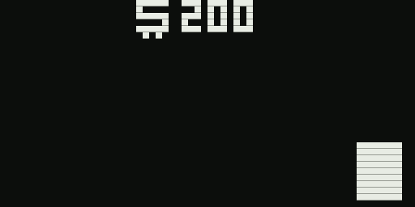
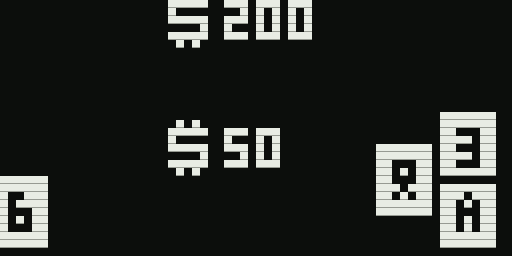

Blackjack
G.J. Bidgood · DREAMER no. 7 (1981-03) p. 11 1K RAM


Twenty-one against the DREAM, which plays on the left while your cards are on the right. You start with $200 and type your bet at the flashing dollar sign; the bet is refused if it would take your credit past $500 or below zero. A white square dealt to you is an ace.
Keys
Bet digits 0-9 then A to accept, C to change; an ace asks 1 = value 1, other = 11; 0 = stand, other = hit; F = new game.
Files
| File | Version | Load | Run |
|---|---|---|---|
| Blackjack.d68 | main | 0080-03FF | C000 |
Listing as transcribed (with notes): blackjack.txt
Source
DREAMER no. 7 on archive.org, p. 11 (PDF page 13). Author: G.J. Bidgood.
Corrections applied
None.
Open doubts
- 03B1-03B2 read as 00BC (the only base that hits the card font at 00C0).
- 0100-01FF not printed (zeros).
- Hand-written changes on the scan (02B4 3F00 -> 3F0F, 02E8, 02F8, keys 0 -> F) not applied.